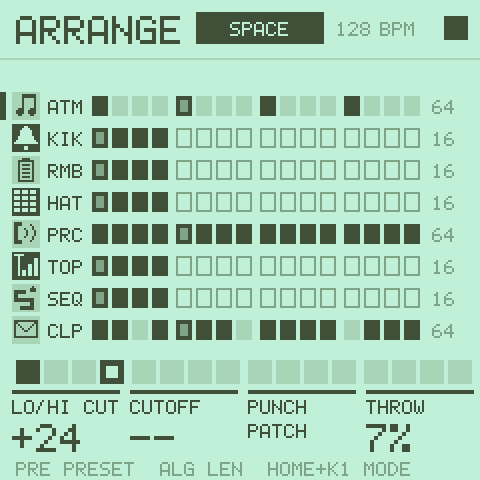
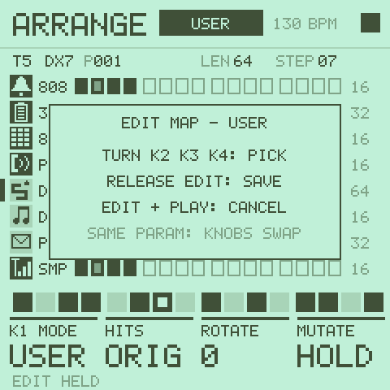

ONE PAGE. FOUR MODES.
ARRANGE shows all eight tracks at once. SELECT picks a track, PRESETS changes its sound, ALGORITHM sets its length, and K1 switches between four modes; the inverted chip in the header names the mode. K2, K3 and K4 then do what the mode says, on the selected track.
- HITS spreads N hits evenly over the track (Euclidean). Turn fully left for the original pattern.
- ROTATE shifts the loop step by step.
- MUTATE left erodes hits each loop, right evolves the pattern over time, centre holds.
- GATE note length for melodic tracks.
- SWING global shuffle.
- CHANCE probability of every hit, 100% down to 12%.
- CUTOFF filter of the track (non-DX7 sources).
- PUNCH envelope decay of DX7 tracks.
- THROW pushes the track into the delay while you turn, then lets the echoes ring out.
- Your own three knobs.
- Hold EDIT and turn K2, K3 or K4 to pick from 11 parameters.
- Release EDIT to keep the map. EDIT+PLAY cancels.
FROM THE DEVICE






INSTALL
The installer is the official FM1 Open web updater, built with this firmware inside it. It talks to the FM-1 over USB MIDI, checks every package before writing, and can put M-VAVE's original V15 back.
FM-1.fwsc from M-VAVE's download page. Keep the FM-1 powered and connected until the update finishes.- Use a computer with Chrome or EdgeWeb MIDI with SysEx is needed. Safari and Firefox cannot install firmware.
- Connect the FM-1 by USBUse a data cable, switch the FM-1 on, and close other music apps that might hold its MIDI port.
- Open the installerAllow MIDI access when the browser asks. Choose the FM-1 and start the update.
- Wait and restartWhen it finishes, the FM-1 restarts on the 3310 boot screen and opens on ARRANGE. Press SEQ to switch between ARRANGE and the step editor.
CHECKING THE INSTALLER…
If this text stays, open the page through OPEN-SITE.bat or GitHub Pages.
GOING BACK
The installer can return the FM-1 to M-VAVE's original V15. You can also use M-VAVE's own updater with their FM-1.fwsc. Projects and samples are not interchangeable between firmwares, so restore them from your backups.
MANUAL
Everything from FM1 Open still works: HOME overview, step editing, FM and sound editors, mixer, effects, projects, MIDI and Bluetooth. 3310 adds the ARRANGE page on top, in two tones.
KNOBS ON ARRANGE
| Control | What it does |
|---|---|
| SELECT | Choose track 1–8. The coloured marker and K2–K4 follow it. |
| PRESETS | Change the sound (program) of the selected track. A box shows the new number. |
| ALGORITHM | Track length: 16, 32, 48 or 64 steps. Each track loops on its own length. |
| K1 | Mode: RHYTHM, GROOVE, SPACE, USER, shown in the inverted chip at the top. |
| K2–K4 | The three parameters of the current mode, applied to the selected track. |
BUTTONS
| Button | What it does |
|---|---|
| SEQ | Switches between ARRANGE and the original step editor. |
| HOME | Original HOME overview; HOME again opens the preset browser. |
| EDIT | Short tap: sound editor. Hold in USER mode: remap K2–K4. |
| EDIT + PLAY | While remapping: cancel and keep the old map. |
| HOME + PLAY | Emergency stop: silences all notes and returns to ARRANGE. |
USER MODE PARAMETERS
HITS, ROTATE, MUTATE, GATE, SWING, CHANCE, CUTOFF, PUNCH, THROW, REVERB and VOLUME. Picking a parameter that another knob already uses swaps the two knobs, so there are never duplicates. Changing the map never changes the values a track already has.
THE SCREEN
Each row shows a track: number box, sound source, and up to four sections of four bars (four steps each). Bars with hits are filled, the playing bar is outlined, and bars outside the track length are outlined. Below the rows, the zoom shows the sixteen steps of the section the selected track is playing. The square in the header and the number boxes invert in two frames with the music.
KNOWN LIMITS IN 0.1
- The sequencer lives in M-VAVE's closed engine, so lengths are 16/32/48/64 steps and there is no ratchet or micro-timing.
- HITS, ROTATE, MUTATE and the USER map are kept in memory only and reset when the FM-1 is switched off. The resulting steps, chances and sends are saved with the project as usual.
- This release has been tested in a host simulation of the screen code. Report anything that behaves differently on hardware.
FILES
Everything is open. Download the firmware, read the code, fork it, improve it.
app/hlv.inc and the hooks in app/screen.c.
Source archive (.zip)The exact source this site was built from, as required by the GPL.
3310_README.mdTechnical notes: what changed, controls and limits.
LICENSE.mdGPL-3.0 with the FM1 SDK linking exception.
BUILD FROM SOURCE
Building needs Windows x64, PowerShell and the JieLi toolchain 2.5.3, exactly as FM1 Open.
- Install the toolchainGet JieLi Windows toolchain 2.5.3 (link in
README.FM1-OPEN.md) and setFM1_PI32_TOOLCHAINto itspi32folder. - Preview in the browser
.\tools\Build-Web.ps1 -LocalPreviewbuilds a simulator of the instrument with this screen code. - Build firmware only
./sdk/Build.ps1 -FirmwareOnly -Toolchain 'C:\JL\pi32' - Build this siteSet
FM1_SOURCE_URLto the release archive, then run.\tools\Make-Site.ps1. It packages the firmware and copies the installer and downloads intodocs/.